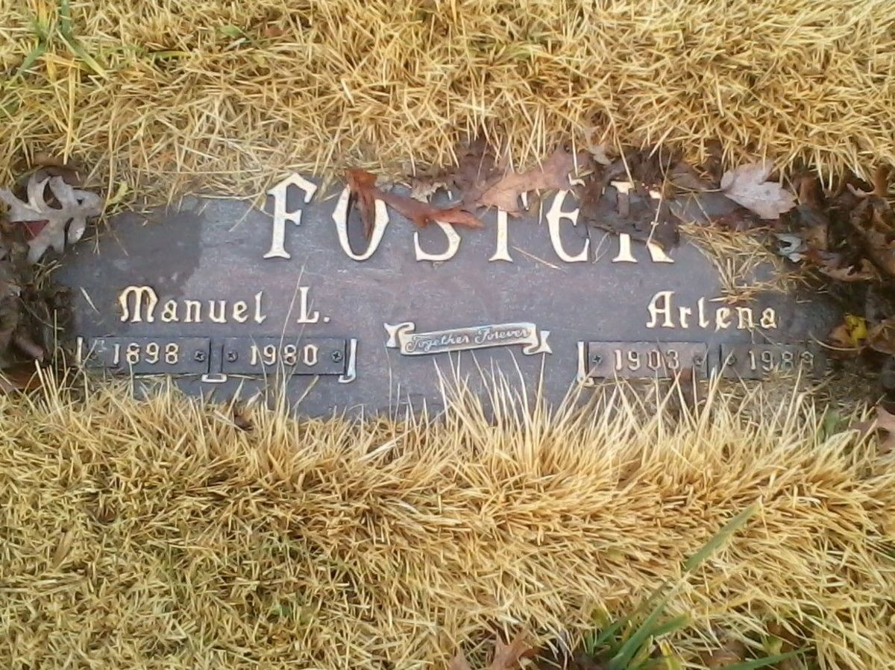
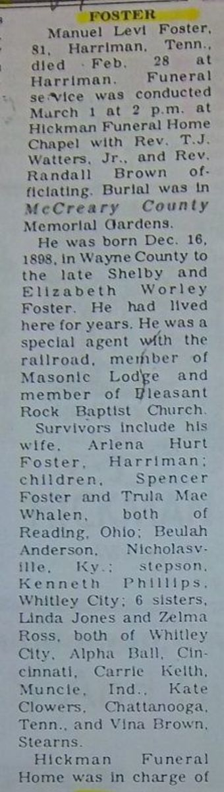

Manuel Levi Foster
16 December 1898 – 28 February 1980
Quick Facts
Immediate Family
Parents
- James Shelby “Shell” Foster (1871–1929)
- Elizabeth A. Abbott
Spouses
- Emma Lou Gregory
- Arlena J. (Hurtt) Foster
Children
- Leamon E. Foster (1917–1968)
- Herbert Spencer Foster (1919–1986)
- Clyde Kelly Foster (1921–1975)
- Beulah Rose Foster (1924–2020)
- Trula Mae Foster (1926–1997)
- Manuel Levi Foster Jr. (1929–)
Siblings
- Carrie M. Foster Keith (1908–2000)
- Vina Jane Foster Brown (1914–1996)
- Linda Jones
- Zelma Ross
- Alpha Ball
- Kate Clowers
On Family Tree Sites
Couple Folder
Life Timeline
16 December 1898 · Birth
FamilySearch and Find a Grave report birth in Wayne County, Kentucky.
17 April 1916 · Marriage reported
FamilySearch compiled profile reports marriage to Emma Lou Gregory in Whitley City; original county register image not inspected.
Five-generation family photo · date not visible
A clipped newspaper caption identifies Manuel, granddaughter Trula Mae Foster Green, great-granddaughter Emma Lee Gilbreath Henry and James Henry.
28 February 1980 · Death
Find a Grave memorial and reproduced obituary clipping report death in Harriman, Tennessee, and burial at McCreary County Memorial Gardens.
Life Story
Manuel Levi Foster’s compiled profile and memorial report a 16 Dec. 1898 birth in Wayne County, Kentucky, and death on 28 Feb. 1980 in Harriman, Tennessee. His Find a Grave-reproduced obituary clipping describes him as a railroad special agent and a member of Pleasant Rock Baptist Church.
The captioned five-generation photo shows Manuel in a family group with Trula Mae Foster (captioned “Green”), Emma Lee Gilbreath Henry, and James Henry. A separate clipping attached to Manuel’s memorial names wife Arlena Hurt Foster and daughter Trula Mae Whalen. The compiled profile links Emma Lou Gregory as spouse and Trula Mae Foster as a child. These names could reflect multiple marriage/name forms; the exact sequence is unresolved.
The sources disagree about Manuel’s mother: the compiled profile names Elizabeth A. Abbott; the Find a Grave memorial and obituary clipping say Elizabeth Worley. The father James Shelby/Shelby Foster is consistent. His maternal identity remains unresolved pending original records.
Photographs & Family Gallery


Sources & Records
- FamilySearch compiled profile, Manuel Levi Foster — Reports birth/death, James Shelby Foster and Elizabeth A. Abbott as parents, Emma Lou Gregory as spouse, 17 Apr. 1916 marriage and six children. Compiled tree.
- Find a Grave memorial 63033692 and photo page — Reports dates and burial; includes shared marker, five-generation photo clipping and reproduced obituary clipping.
- Five-generation Foster family photo caption — Names Elizabeth Worley Foster, son Manuel, granddaughter Mrs. Trula Mae Foster Green, great-granddaughter Mrs. Emma Lee Gilbreath Henry, and James Henry. Newspaper masthead/date cropped.
- Manuel Foster obituary clipping — Find a Grave-reproduced clipping: 16 Dec. 1898 birth, 28 Feb. 1980 death, railroad special agent, Pleasant Rock Baptist Church, wife Arlena Hurt Foster, children and six sisters. Publication/date not visible.
- Beulah Rose Foster Anderson obituary — Funeral-home obituary names Manuel L. and Emma Lou Gregory Foster as her parents and Trula Mae Gilreath as a sister; independent corroboration for the Foster parental group.
Research Notes and Open Questions
- Mother conflict: the compiled profile says Elizabeth A. Abbott; Manuel’s memorial and reproduced obituary say Elizabeth Worley. Do not combine or resolve without an original record linking the names.
- Spouse/name conflict: FamilySearch compiled profile links Emma Lou and a 1916 marriage; Manuel’s later obituary names wife Arlena and daughter Trula Mae Whalen; five-generation caption calls her Trula Mae Foster Green. Likely later marriage/name evidence, but sequencing and identities remain unproved.
- The reported 1916 marriage comes from a compiled FamilySearch profile. Inspect the original McCreary County register and census records before treating it as documented.
- The six sisters in the 1980 clipping are in married names; only Carrie and Vina have linked memorial/profile names in the reviewed sources. Keep the other names attributed and unlinked; no sibling profiles.
- Five-generation family picture is the profile image because it identifies Manuel by caption; it is a group image, not a portrait. Retain the original caption and its spelling.
DNA
No DNA match evidence has been reviewed for this profile.
Family Notes
Research updates, source images and family material are kept in the parent-couple Google Drive archive.
Profile history: Created 23 November 2026. Follows Homer William Brewster Jr.’s Gen VI layout; family images and source material are credited below. Unresolved relationships are not presented as established facts.